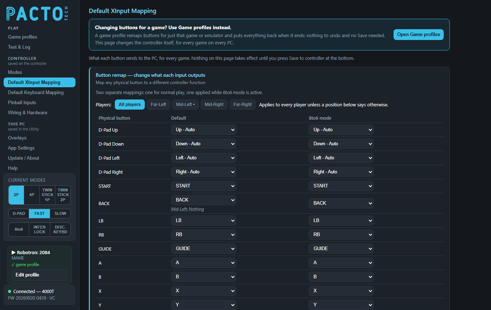
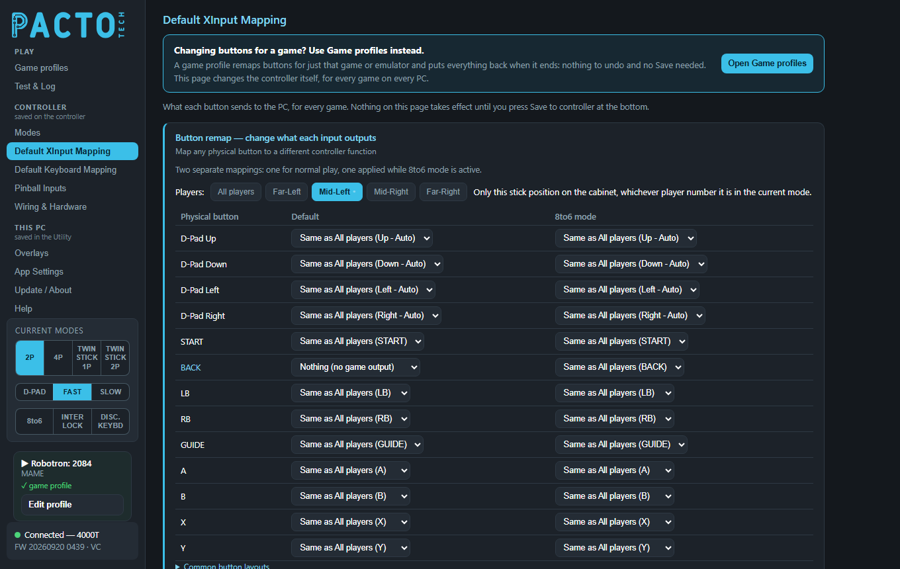
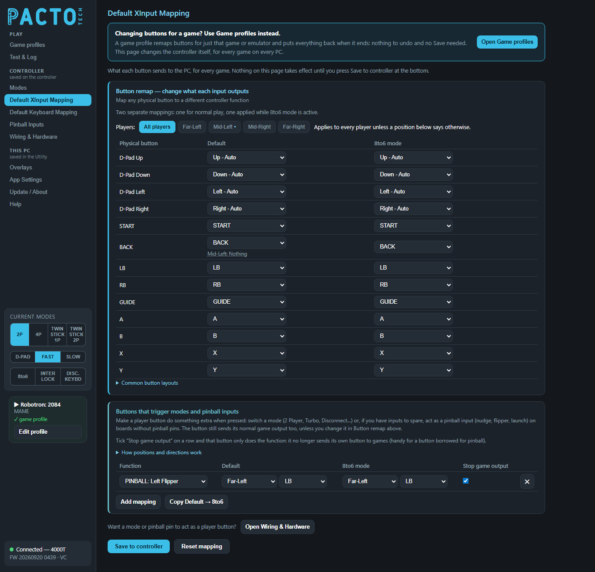
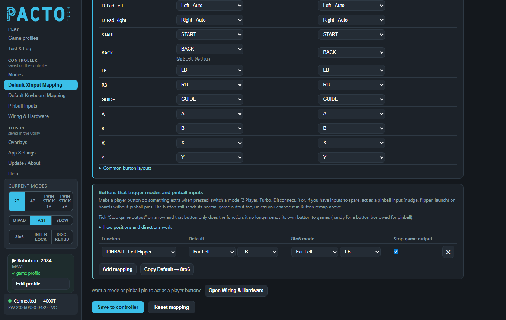

Change what each arcade button sends to the PC as an Xbox controller, for every game: for all players at once or for one cabinet position. You can also let a player button switch modes or act as a pinball input.
Changing buttons for a game? Use Game profiles instead. A game profile remaps buttons for just that game or emulator and puts everything back when the game ends: nothing to undo and no Save button. This page changes the controller itself, for every game on every PC, so it is the right place only for wiring fixes and changes you want everywhere. What a game profile can remap.

The page has two parts, most used first:
| Section | What it does |
|---|---|
Button remap — change what each input outputs | The main table: change which Xbox button each arcade button sends, for all players or one cabinet position. A folded Common button layouts reference sits under it. |
Buttons that trigger modes and pinball inputs | A player button switches a mode (2 Player, Turbo, Disconnect…) or acts as a pinball input when pressed. |
Nothing on this page reaches the board until you click Save to controller at the bottom. The page is in
the Controller group of the sidebar and needs the controller plugged in.
This table is the one most people need. Each row is a button on the cabinet (Physical button).
The drop-down next to it picks what that button sends to the PC. Every row starts as itself, for example
A sends A. The directions start as Up - Auto, Down - Auto and so on.
The rows are D-Pad Up, D-Pad Down, D-Pad Left, D-Pad Right,
START, BACK, LB, RB, GUIDE, A,
B, X and Y. On boards with stick-click buttons you also get
LS (stick click) and RS (stick click).
| Choice in the drop-down | What the PC sees |
|---|---|
Up - Auto, Down - Auto, Left - Auto, Right - Auto |
A joystick direction that behaves like the real joystick, so it follows the current stick mode (D-PAD, ANALOG FAST or ANALOG SLOW). |
START, BACK, LB, RB, GUIDE, A, B, X, Y |
That Xbox button. |
LS (stick click), RS (stick click) |
Clicking the left or right thumbstick. These are offered on every board, even boards without stick-click buttons. |
DPAD Up Fixed … DPAD Right Fixed |
Always that d-pad direction, whatever the stick mode. |
L-Ana Up Fixed … L-Ana Right Fixed |
Always the left analog stick in that direction. |
R-Ana Up Fixed … R-Ana Right Fixed |
Always the right analog stick in that direction. |
Nothing (no game output) |
The button sends nothing to games. Offered with controller firmware that supports it (see below). |
If several buttons push the same stick, the strongest push wins.
LT, RT) are not part of this table. They have no row and can't be picked as an output.If you set A to B, pressing A sends B, and A is no longer sent at all unless another
row is set to A. To swap two buttons, change both rows: set A to B and B to A.
With controller firmware that supports it, a Players: bar sits above the table. All players
is the normal view: a change there applies to every player's controls. The other buttons are the physical stick
positions on your cabinet: Far-Left, Mid-Left, Mid-Right and
Far-Right on 4-player boards, Left, Middle and Right on 3-player
boards, and Left and Right on 2-player boards. Pick one to give that position its own
mapping. A position means the same controls on the panel whichever player number they are in the current mode.

Mid-Left selected: every cell follows All players except BACK, which is set to
Nothing (no game output), so that position's BACK button sends nothing to games.In a position's view, each drop-down offers:
| Choice | What it does |
|---|---|
Same as All players (…) | The position follows the All players setting, shown in brackets. This is where every cell starts. |
Any output, with the button's own name marked (as itself) | This position sends that
output instead. Pick (as itself) to keep the plain button at this position even when All players
remaps it. |
Nothing (no game output) | The button sends nothing to games at this position. |
Back on All players, a small line under a cell lists the positions that differ, for example
Mid-Left: Nothing. Click it to jump to that position. Positions with their own settings are marked with a
dot on their button in the Players bar.
Nothing (no game output) and the Stop game
output column need controller firmware that supports them. With older firmware the page shows the single table
for all players, as before. Update the firmware on Update / About.There are two separate mappings. The Default column is used for normal play. The
8to6 mode column is used only while 8-to-6 mode is on. The 8-to-6 shift (below) is built in, so leave the
8to6 mode column as it is unless you want a different 8-to-6 layout. Each position has both columns too.
Unfold Common button layouts under the table to see three reference cards (nothing to set there):
X Y RB LB, bottom row A B RT LT.
This is the recommended wiring for 8-button cabinets.X Y LB, bottom row A B RB.8-to-6 mode moves four buttons. It is built into the board, so you don't have to set it up in the remap table:
| Physical button | Sends while 8-to-6 is on |
|---|---|
| RB | LB |
| LB | LT |
| RT | RB |
| LT | RT |
A, B, X and Y are unchanged. You can turn 8-to-6 on from the 8to6 button in the sidebar, the
board's 8TO6 inputs (on boards that have them), a button shortcut or a game profile. See Modes.

This works the other way round: pressing a player control fires a mode or system function, or (if you have inputs to spare) a pinball input. It lets you put a mode change on your control panel without wiring the dedicated pin. The control still sends its normal game output as well, unless you tick Stop game output or remap it in the button remap table.

LB button acts as the pinball Left Flipper, with Stop game output
ticked so it no longer sends LB to games.The section starts empty. Click Add mapping to add a row (up to 12). In each row:
Function picks what happens (list below).Default picks the control that fires it in normal play: a cabinet position or fixed player, then the
control (a direction, a button, LT or RT).8to6 mode picks the control that fires it while 8-to-6 is on. For 8to6 ON and
8to6 OFF this column is locked to match Default.Stop game output (see below).✕ removes the row.The same function can be put on several controls. Unfold How positions and directions work for a
short explanation of positions (they follow the physical stick positions, so they keep working when 2-player or
4-player mode reorders the players) and of Player N - Fixed (it follows the Xbox player number after
reordering).
| Function | What it does |
|---|---|
2 PLAYER, 4 PLAYER, TWINSTICK | Switches the player layout. Only the layouts your board supports are listed. |
D-PAD, ANALOG FAST, ANALOG SLOW | Switches the stick output. |
TURBO ON, TURBO OFF | Turns turbo on or off. |
8to6 ON, 8to6 OFF | Turns 8-to-6 mode on or off. |
EXIT (START+BACK) | Sends START and BACK together, the exit combo many emulators use. |
DISCONNECT / KEYBOARD | Switches to keyboard / disconnect mode (see Default Keyboard Mapping). |
INTERLOCK (toggle) | Each press flips the START+BACK interlock on or off. |
SHIFT | Acts as the SHIFT modifier button used by the 1000T's instant shortcuts. |
PINBALL: Nudge Left … PINBALL: Nudge Up | Feeds that input on the Pinball Inputs page. On a board without pinball pins (such as the 4000T) this is how you get flippers, launch and nudge, but only if you can spare inputs: player buttons no game needs, or unused mode pins given a player slot under Spare pins as player buttons on Wiring & Hardware. |
With controller firmware that supports it, each row has a Stop game output tick box. Tick it and that
button only does the function: it no longer sends its own button to games. This is handy for a button borrowed
for pinball, such as a flipper. The tick applies to the whole row, in both columns. With older firmware the column is
hidden and the button always sends its normal output too.
EXIT (START+BACK), SHIFT and the
PINBALL functions still work.Turning the board's own mode or pinball pins into player controls is now done on
Wiring & Hardware → Spare pins as player buttons. The line
Want a mode or pinball pin to act as a player button? near the bottom of this page has an
Open Wiring & Hardware button that takes you there.
| Button | What it does |
|---|---|
Save to controller | Writes everything on this page to the board: both columns of the button remap table (All players and every position) and the Buttons that trigger modes rows. The board keeps them after power-off. Saved appears when it's done. |
Reset mapping | Sets every button back to itself in both columns, clears every position's own settings and removes every Buttons that trigger modes row. Click Save to controller to keep the result. |
Copy Default → 8to6 | Copies the whole Default column to the 8to6 mode column: the button remap (including the positions' own settings) and the Buttons that trigger modes rows. |
If you leave the page with unsaved changes, the Utility shows an Unsaved changes window where you can
choose Save or Discard.
To keep a copy of your mapping, or to put the same setup on another board of the same model, use
Back up settings to file and Restore settings from file on
App Settings. After a restore, check the settings and click
Save to controller.
This page sets the board's permanent mapping. If only one game needs different buttons, use a game profile instead.
In the Game profiles table, the Buttons column has these choices:
| Choice | What it does |
|---|---|
Default | The game uses the board's own mapping. |
8to6 | Turns on 8-to-6 mode for the game. |
Custom (match players) | One mapping, applied the same way to every player. |
Full custom | Sends any player's input to any player's output, or to a keyboard key. |
While that game runs, its mapping takes priority over the table on this page for the buttons it changes. Once the game closes, your saved mapping is used again.